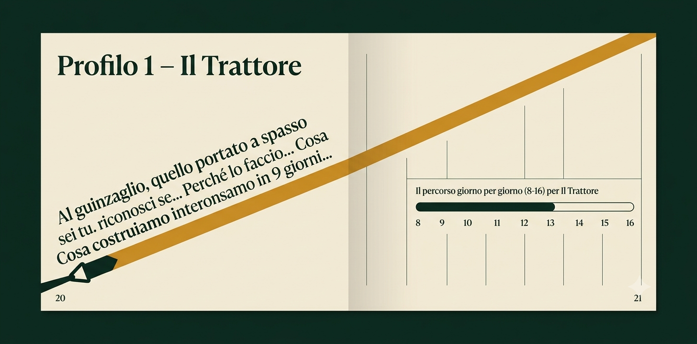

Guinzaglio diagonale a tutta apertura — adottato: la fascia-guinzaglio ambra che taglia lo spread con il testo che corre lungo la diagonale è l'evoluzione del nostro filo-guinzaglio. Da ricostruire in codice (nell'immagine AI il testo è illeggibile/errato): tipografia vera lungo il percorso, timeline 8–16 integrata.